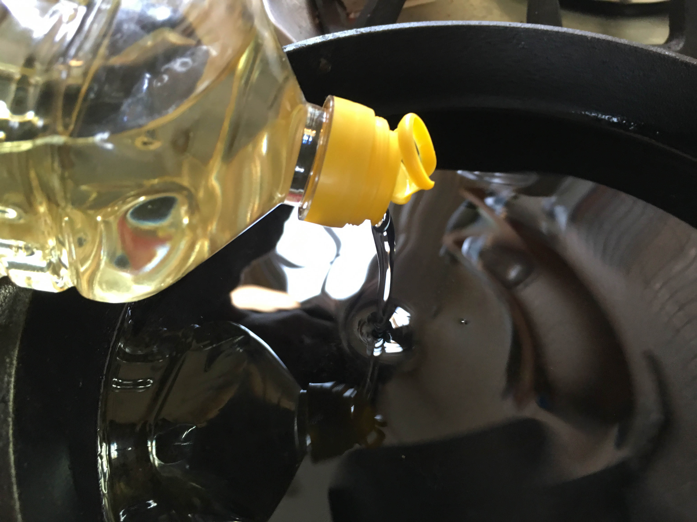
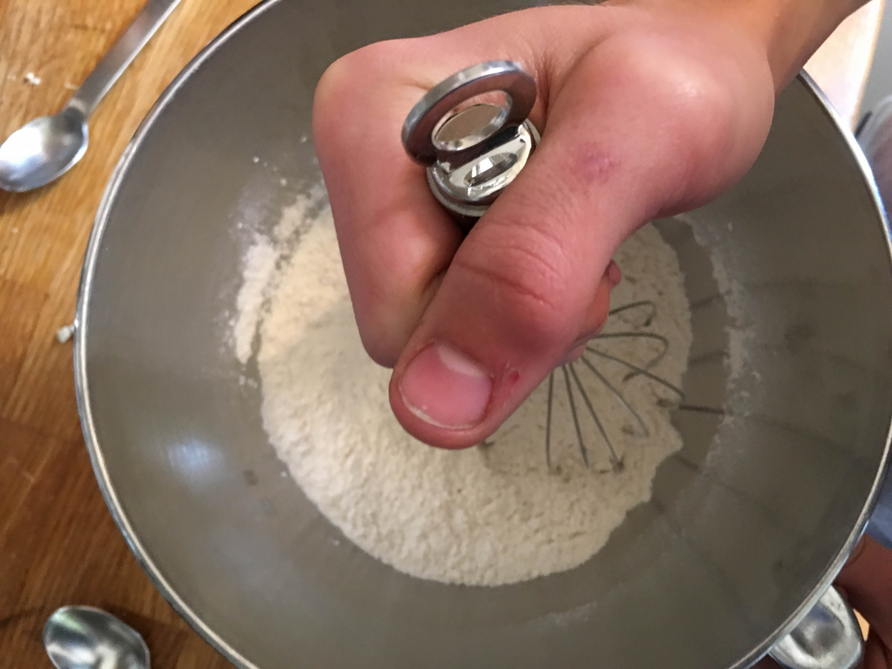
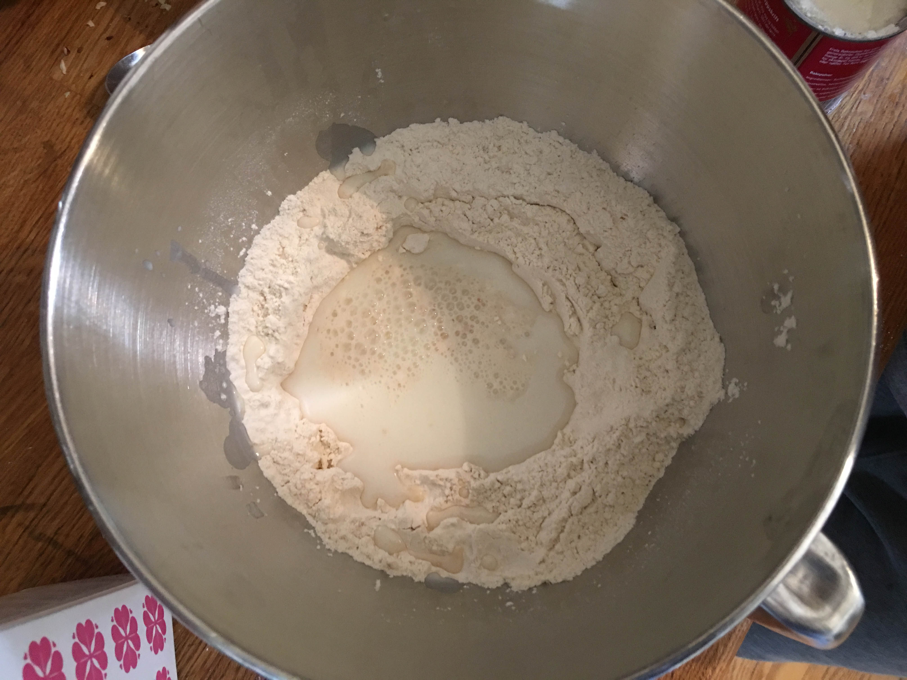
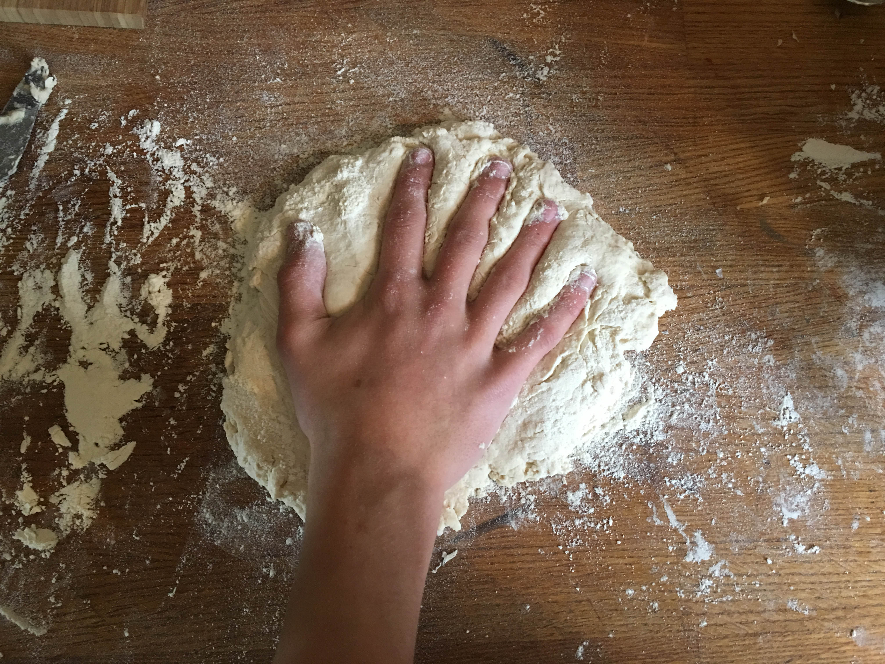
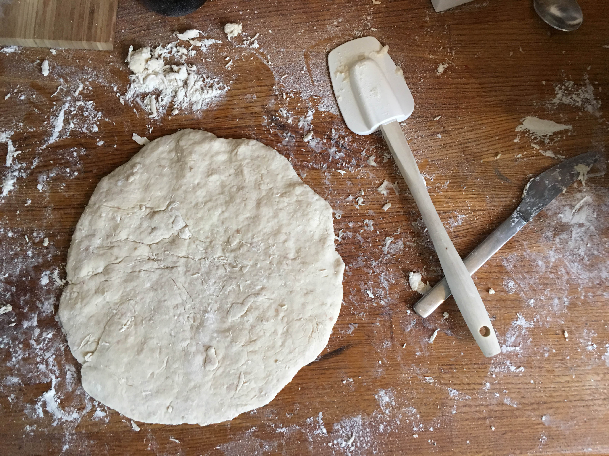
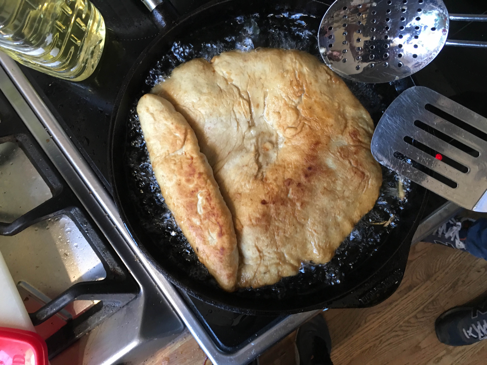

Bannock er et tradisjonelt flatbrød laget av Inuittene i Canada, der de brukte ressursene som de hadde. I vår oppskrift har vi valgt å bruke hvetemel, ettersom andre typer mel som tradisjonelt ble brukt er vanskelig å få tak i. Mens vi lagde brødet, filmet vi det og tok bilder. Du kan se filmen og bildene under. I tillegg til at bannock ble mye spist blant innuitter, blir det også spist av en rekke andre nord-amerikanske "indianere", og av skotter.
1. Det første du må gjøre er å fylle en jernpanne opp omtrent 1 cm matolje. Skru på varmen til omtrent medium.

2. Ha hvetemel, salt og bakepulver i en bakebolle. Bland det godt sammen.

3. Ha vann og melk i midten av melblandingen. Bland godt sammen til en litt løs deig har dannet seg.

4. Ha litt mel på et bakebord, og ha deigen over. Kna den godt i minst 5 minutter. Når du har knadd ferdig, form deigen til en flat sirkel, som er noen centimeter tykk.


5. Flytt deigen over til en melet "pizzaspade". Ha en bitteliten bit av deigen i oljen. Hvis den bruser er oljen varm nok. Ha deigen forsiktig over i oljen. Etter omtrent 1 minutt(eller til den begynner å se gyllen ut) snur du brødet ved hjelp av 2 kjøkkenspader. Etter 1 minutt igjen, ha deigen opp fra oljen, og la den resterende oljen renne av. Når den er ferdig kan du drysse over litt salt og/eller urter for å gjøre det litt mer spennende og eksotisk.

Server! Dette brødet kan spises ved siden av mange forskjellige retter, på lik linje med andre flattbrøder som tradisjonelt norskt flattbrød, naan, tortilla etc.
Tips: Hvis du ønsker å "piffe" opp brødet litt, kan du gjerne legge til noen rosiner.
Blant andre tradisjonelle retter inuittene konsumerte, har vi blant annet Akutaq, en dessertrett som kan sammenliknes med iskrem. Det er en blanding av bær, eller til og med fisk, og fett. I tillegg til dette spiste også inuittene en slags suppe eller gryte ved navn suaasat, nasjonalretten til Grønnland. Suaasat brukte hovedsakelig kjøtt som hvalkjøtt eller selkjøtt, men man brukte også reinsdyrkjøtt.